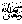

Abu Ubaydahreports, I have heard Rasulullahsaying, “Fasting is a protective shield for man, as long as he does not tear up that protection.”
Note: “Protective Shield” means: Just as a man protects himself with a shield, similarly fasting protects him from his well known enemy Shaitaan. In other Ahaadeeth, we are told that fasting saves one from Allah’spunishment and the fire of Jahannam in the Aakhirah (Hereafter).
Once, somebody asked Rasulullah“What causes the fast to be torn?” Hereplied, “Speaking lies and backbiting.”
The Ulama tell us of six things, about which care should be taken in fasting:
Firstly: one should keep the eyes away from any place where one should not look, e.g. T.V, etc).
The pious people say that this means that we should not look at all at those places and things that take the mind away from the remembrance of Allah.
Secondly: One should guard the tongue from lies, unnecessary talks, backbiting, arguments, etc. In the Saheeh Bukhari we read that fasting is a shield for the fasting person, for this reason, those who fast should stay away from all useless talk, joking, arguments, etc. Should anyone start an argument, then say to him, “I am fasting.”
In other words, one should not start an argument and if someone else starts it, then too, one should avoid taking it up. When the person who starts an argument is not an understanding person, then at least one should remind oneself that: “I am fasting.”
During the time of our Nabitwo women were fasting and they felt so hungry that they could not manage the fast and both were close to death. When the Sahaabah ^ told our Nabiabout this, he sent a bowl to the women asking both of them to vomit into it. When they both vomited into the bowl, pieces of meat and fresh blood were found in it. The Sahaabahwere greatly surprised, upon which our Nabisaid: “They fasted with pure food from Allahbut ate food not permitted by Allahby backbiting other people.”
One should therefore, stay away from sins and especially major sins like backbiting and slander, which are often done to pass time. Allahsays in the Qur-aan that backbiting is the (actual) eating of the flesh of one’s dead brother.
One of the Sahaabahasked Rasulullah“What is backbiting?” Rasulullahreplied: “To say something about your brother, behind his back, which he would not like.” The Sahaabah then said: “And is it still backbiting if what is said about him is really true?” Our Nabisaid: “In that case (if that which was said is really true) it is exactly backbiting; but if what is said is false, then you have in fact slandered (falsely accused) him.”
Once when Nabipassed by two graves, He said: “Punishment is being given to both the people of these graves. One is being punished because of backbiting and the other because of not having taken precautions (to stay clean) when passing urine.”
Thirdly: The person who fasts must be careful about what he hears. Whatever is wrong to say, is also wrong to listen too.
Rasulullahhas said, “In backbiting, both the backbiter and the one who listens to it are equal in sin.”
Fourthly: The rest of the body should be kept away from sin and wrong things. The hands must not touch it and the feet must not walk towards it. Special care should be taken especially at the time of breaking the fast that no doubtful food enters the stomach. When a person fasts and at the time of breaking the fast, breaks his fast with haraam food, he is like a sick person who takes medicine as a cure but also adds a little poison, which kills him.
Fifthly: After having fasted, it is not good while breaking the fast at iftaar to completely fill the stomach even with halaal food because the purpose of fasting is then lost. Fasting decreases your bodily needs and increases a persons faith and piety.
For eleven months, we eat and drink freely. In Ramadhaan this should be cut down to a minimum. We have a bad habit of filling our stomachs when breaking the fast to cover up for what was lost and again at sehri in preparation for the fast, thereby actually increasing our daily food.
Ramadhaan for such people increases their appetite. Many such items of food are eaten that we normally do not eat at other times. This type of habit is completely against the spirit of Ramadhaan and the true spirit of fasting.
Actually in that case we have only changed the times of eating and not really fasted. In fact, by having many types of delicious foods, we eat even more than in normal times. The result is that instead of lessening the bodily desires, these are increased. The real benefit of fasting comes with real hunger. Our Nabisaid, “Shaitaan lives in the body of man like blood, so close up his path by remaining hungry,” i.e. when the body is hungry, the soul receives strength.
Apart from hunger, fasting gives us a chance to see the condition of the poor people and thereby feeling sorry for them. This too can be felt by remaining hungry, but by filling the stomach with delicious foods at sehri, we will be losing the purpose of fasting because we will not feel hungry throughout the fast.
Our Nabihimself said: “Allahdoes not hate the filling of anything to the top more than He hates the filling of the stomach.” Rasulullahsaid, “A few bites should be enough to keep the back straight. The best way for man is that one third should be filled with food, one third with drink, while the other third remains empty.” Rasulullahhimself used to fast for days together without having eaten in between.
The sixth point is that: After fasting, we should always worry about whether our fast had been
accepted by Allahor not. This should be done with all forms of ibaadaat
(worship) of Allah. We never know whether something important may have been left out by
mistake. We should always fear that Allah 
The Qur-aan commands, “Fasting has been made fardh for you.” From this Aayah it is seen that fasting is made compulsory for every part of the body. Thus, fasting of the tongue means to avoid lies, etc., fasting of the ears means not listening to evil, fasting of the eyes means not to look at any form of evil and sin. Similarly; fasting of the self means to be free from all bodily desires, fasting of the heart means removing the love of worldly things from it and fasting of the mind means avoiding thoughts about anything other than Allah.